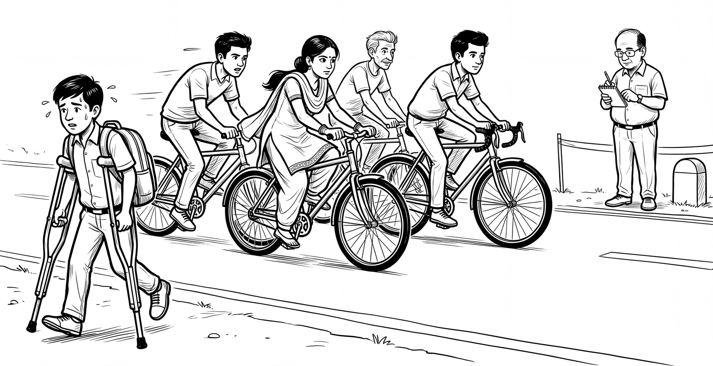

The Crutch and the Bicycle
A study published in PNAS in 2025 gave nearly 1,000 high school students in Turkey access to GPT-4 during maths practice. The students were split into three groups. The first used GPT-4 as an ordinary chat window that answered whatever it was asked. The second used a tutor version that gave hints and held back answers. The third practised with books and notes alone, without AI.
During practice, the ordinary chat group scored 48 per cent higher than the students without AI. The tutor group scored 127 per cent higher. Then the tool was taken away for the exam. The ordinary chat group now did 17 per cent worse than students who never had AI at all. The tutor group did no worse than them.
The worst part came in the survey afterwards. In the working version of the paper, the students who lost the most did not think they had learned less. The researchers read the chat logs and found that most of them had simply asked for the answer and copied it. The word the researchers chose for what the tool became was a crutch.
This post fits in one line. Use AI as a bicycle, never as a crutch. The Turkish trial shows why, with an exam score attached.
A crutch is not the villain
A crutch is the right tool after a fracture. It carries weight the leg cannot carry yet. The trouble starts when the leg heals and the crutch stays. The muscle that is spared stops being built. A student who asks the machine for every answer is leaning on a crutch with a leg that was never broken, and the Turkish exam shows the price: weeks of practice that felt productive, followed by a mind that walks worse on the day the support is taken away.
A bicycle works the other way. You still pedal. The machine multiplies what your legs put in. Steve Jobs used this image in 1990. He had read a study comparing how much energy different animals spend to cover a distance. Humans on foot ranked poorly. Then someone measured a man on a bicycle. He beat every animal on the list, including the condor, a giant vulture of the Americas that had topped it. Jobs called the computer “a bicycle for our minds.”
The analogy has a weak spot, and it is worth naming. A bicycle also saves effort. Ride the same distance with less work and you get less fit, not more. The bicycle makes you stronger only if you use the energy it saves to go further. The same question applies to AI. What are you doing with the time it saved you?

The gap was there before ChatGPT
In 2017 the OECD compared adult skills with what computers could already do. It used its Survey of Adult Skills, which tests reading, arithmetic and problem solving. About two thirds of workers were using these skills at roughly the level computers could already reach. Only 13 per cent used them every day at a level clearly above it.
That was five years before ChatGPT. Generative AI did not open the gap. It made the gap visible to everyone at once.
Educators sort thinking skills into six levels, from simple to complex. The scheme is Bloom’s taxonomy, revised in 2001: remember, understand, apply, analyse, evaluate, create. Machines now do the first three cheaply and fast. They attempt the top three as well, but there a person still has to judge whether the result is any good. Most schooling spends years on the bottom three, memorising dates and applying formulas, and many students meet real analysis, judgement and original work only in a final-year project or a doctoral thesis, a stage most of them never reach.
Estonia’s Minister of Education and Research, Kristina Kallas, has made this argument in public, including in a TEDx talk at the University of Tartu. Her point is that an education minister’s job is not to manage the technology. It is to care about what happens to learning, and to the human capacity to learn. Her answer is to start teaching analysis and evaluation years earlier, instead of saving them for university.
Why the brain reaches for the crutch
A common explanation says the brain avoids hard thinking because hard thinking burns fuel. The numbers do not support it. The brain is about 2 per cent of body weight and uses about 20 per cent of the body’s oxygen, so it is costly to run. But Marcus Raichle and Debra Gusnard, writing in PNAS in 2002, reported that most thinking tasks change local blood flow by 5 per cent or less. The fuel bill barely moves.
What moves is the feeling. Hard thinking feels expensive, and experiments show people steer away from it when an easier route is on offer. Psychologists have a name for handing a mental job to a tool: cognitive offloading. A calculator does it. The contact list on your phone does it. A chatbot does it for reading, writing and reasoning all at once.
This blog keeps returning to one point. The first post here looked at software developers who believed AI had made them faster while the stopwatch showed otherwise, and the Turkish classrooms show the same pattern, a feeling of ease standing in for a measurement nobody took until the exam. The students felt fine. Their marks did not.
What Estonia is trying, and what India has written down
Estonia announced its AI Leap programme in February 2025 and started it that September. Year one covered 20,000 students in grades 10 and 11 and 3,000 teachers, with OpenAI and Anthropic as partners. A foundation runs it as a public-private partnership. Teachers were trained first. Reports describe a tutor app built to ask the student questions before handing anything over. Whether it improves learning is still being studied. Nobody has published the results yet.
India wrote the goal down in 2020. The National Education Policy says reform should move the system “away from the culture of rote learning as is largely present today.” In April 2026 CBSE released a curriculum on computational thinking and AI for Classes 3 to 8, starting this academic year. Its stated aim is to shift classrooms from rote learning to critical thinking.
That is an intention, not yet a result. The tool usually arrives long before the habit. Printed books spread across Europe within decades of Gutenberg’s press in the 1450s. Mass literacy took about four more centuries and needed schools, teachers and laws.
Three habits to try this week
All three are taken from the tutor design that held up in the trial.
Write your own attempt before you open the tool. Even a bad one. The attempt is the pedalling.
Ask for a hint, not the answer. Say so in the first line: “Do not solve this. Ask me questions until I can.”
Close the tool and do the task again from a blank page. If you cannot, you were on the crutch.
For parents and teachers, one test takes thirty seconds. Ask the child to explain the answer with the screen off.
The machines will keep getting faster. That was never the question. The question is whether the legs are getting stronger.
September 29, 2026 | dasgupta.basab@gmail.com
Sources
Hamsa Bastani et al., “Generative AI without guardrails can harm learning: Evidence from high school mathematics,” PNAS 122(26) (2025); Steve Jobs, interview in “Memory & Imagination: New Pathways to the Library of Congress” (1990); OECD, “Computers and the Future of Skill Demand” (October 2017); Lorin Anderson and David Krathwohl, “A Taxonomy for Learning, Teaching, and Assessing” (2001); Kristina Kallas, “When AI Knows Everything, What Should Humans Learn?”, TEDxUniversityofTartu (2026); Marcus Raichle and Debra Gusnard, “Appraising the brain’s energy budget,” PNAS (August 2002); Wouter Kool et al., “Decision making and the avoidance of cognitive demand,” Journal of Experimental Psychology: General (2010); Estonian Ministry of Education and Research, “Estonia announces a groundbreaking national initiative: AI Leap programme to bring AI tools to all schools” (February 2025); Ministry of Education, National Education Policy 2020, chapter 4; Business Standard, “CBSE launches computational thinking, AI curriculum for classes 3 to 8” (April 2026).
Was this worth your time?